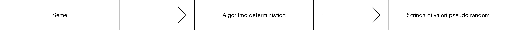

Algoritmi Pseudo Random
Un algoritmo pseudocasuale genera numeri che sembrano casuali, ma che in realtà sono il risultato di un sistema deterministico.
Requisiti per sequenze casuali
Una sequenza è considerata casuale se rispetta due requisiti essenziali: distribuzione uniforme e indipendenza. La distribuzione uniforme implica che i numeri all'interno di un intervallo siano equamente distribuiti, mentre l'indipendenza richiede che ciascun numero non sia influenzato dai precedenti. Inoltre, è importante che il periodo della sequenza sia ampio, in modo da evitare che i numeri casuali in una simulazione si ripetano ciclicamente.
0.1, 0.4, 0.2, 0.9, 0.6, 0.3, 0.8
1, 2, 3, 4, 5, 6, 7, 8, 9, 10
12, 44, 93, 84, 23, 52, 70, 90
Dimostrazione differenze tra dati reali e PRNG
Dado fisico: visualizzazione grafica dei risultati di 484 tiri di un dado reale. Dado simulato: visualizzazione grafica dei risultati di 484 tiri di dado simulatiutilizzando funzione di generazione pseudocasuale.
Ambiti di utilizzo
I numeri casuali e pseudo-casuali, sono ampiamente utilizzati in vari ambiti, quali la simulazione di fenomeni naturali, l'analisi numerica, la programmazione informatica, i videogiochi, il creative coding e la crittografia. Questo approccio trova applicazioni in molteplici settori della scienza e della tecnologia. Tra questi vi sono la crittografia (per la generazione di chiavi e password), la simulazione tramite computers, il metodo MonteCarlo per il calcolo numerico (utile, ad esempio, nel calcolo di integrali complessi non trattabili con metodi classici), i giochi d’azzardo online (come dadi, carte, roulette e casinò online), gli algoritmi probabilistici (come l’algoritmo di Miller-Rabin per la verifica della primalità di un numero) e la programmazione dei videogiochi.
Middle-square method
Cenni storici
I primi passi nella generazione di numeri pseudo-casuali risalgono al XVII secolo con Blaise Pascal e Pierre de Fermat, che esplorarono l'idea tramite esperimenti di gioco d'azzardo. L'elaborazione degli algoritmi avvenne solo nel XX secolo. La necessità di numeri casuali è antica, con metodi empirici come il lancio dei dadi. Con l'avanzare della tecnologia, la generazione sistematica di numeri casuali divenne essenziale. Nei computer deterministici, ottenere casualità è impossibile, ma si è proposto l'uso di fenomeni non deterministici, come i rumori del suono a bassa frequenza. Un momento significativo nella storia della generazione di numeri pseudo-casuali è rappresentato dalla collaborazione di John von Neumann alla costruzione della bomba all'idrogeno nel 1949. Von Neumann calcolò approssimazioni ai processi della fissione nucleare, che richiedevano l'accesso a numeri casuali riproducibili per risultati coerenti e ripetibili. Per soddisfare questa esigenza, von Neumann sviluppò il Middle Square Method, uno dei primi algoritmi documentati per la generazione di numeri pseudo-casuali.
Funzionamento
Questo algoritmo, come tutti i PRNG, utilizza un seme di partenza che può essere definito da fattori casuali come il rumore o il tempo espresso in millisecondi. Da questo seme si genera una sequenza di numeri pseudo-casuali. Il procedimento inizia con l'elevazione al quadrato del seme iniziale. Ad esempio, se il seme è 42, lo eleviamo al quadrato ottenendo 1764. Le cifre centrali di questo risultato diventano il nuovo seme per il passaggio successivo. Questo processo viene iterato per generare la sequenza. Il periodo della sequenza, ovvero il numero di numeri generati prima che la sequenza si ripeta, dipende dal numero di cifre del seme. Più cifre ha il seme, maggiore è la sicurezza e la complessità della sequenza generata.

Limiti dell'MSM
Il Middle Square Method presenta limiti significativi che ne minano l'efficacia e l'affidabilità. La sua tendenza a generare cicli di ripetizione brevi compromette la casualità dei numeri prodotti, rendendolo inadatto per applicazioni che richiedono alta casualità e bassa correlazione tra i numeri. È sensibile alla scelta del seme iniziale e può generare risultati imprevedibili se il seme non è selezionato correttamente. Inoltre, può produrre sequenze con una distribuzione non uniforme, sovrarappresentando alcuni numeri rispetto ad altri. Questi limiti lo rendono meno adatto per applicazioni che richiedono una generazione casuale di alta qualità, spingendo verso l'adozione di algoritmi più sofisticati.
Altri generatori
Mersenne Twister è uno dei generatori di numeri pseudo-casuali più utilizzati. È noto per il suo lungo periodo (219937 - 1) e buone proprietà statistiche. Utilizza un array di stato e una serie di operazioni bitwise (shift e XOR) per generare numeri casuali. È veloce e adatto per una vasta gamma di applicazioni, sebbene non sia adatto per la crittografia.
Xorshift è un semplice algoritmo per la generazione di numeri casuali. Utilizza operazioni bitwise (XOR, shift) su uno stato interno per produrre sequenze casuali. È noto per la sua velocità elevata e la semplicità di implementazione. Tuttavia, il periodo di Xorshift non è estremamente lungo, quindi potrebbe non essere adatto per tutte le applicazioni che richiedono una casualità estremamente alta.